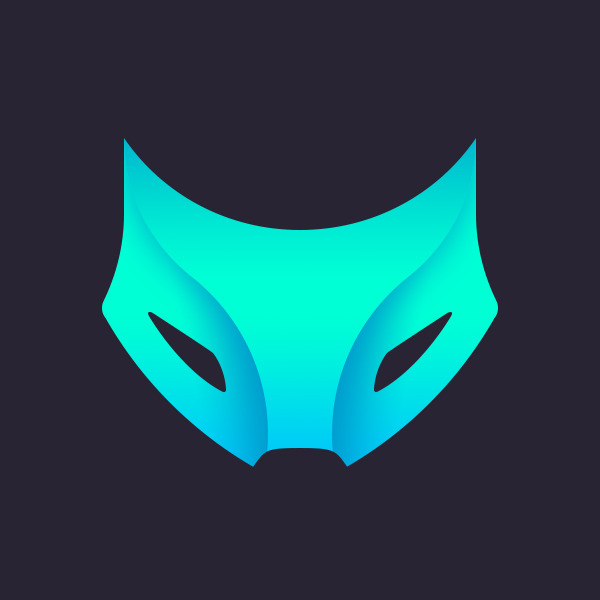
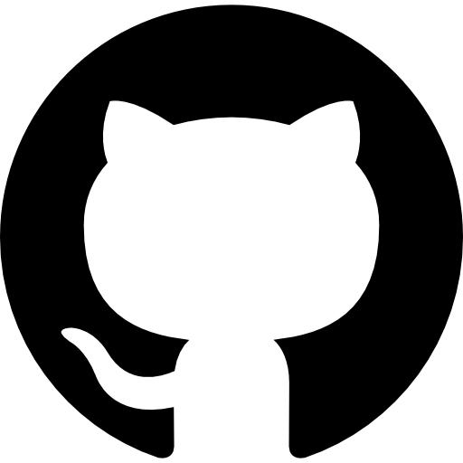

<mat-sidenav-container class="sidenav-container">
  <mat-sidenav #drawer class="sidenav mat-elevation-z8" fixedInViewport
    [attr.role]="(isHandset$ | async) ? 'dialog' : 'navigation'" [mode]="(isHandset$ | async) ? 'over' : 'side'"
    [opened]="(isHandset$ | async) === false">

    <!-- Entête sidenav -->
    <div class="flex-column">
      
    </div>

    <!-- Nav links-->
    <mat-nav-list>
      <a *ngFor="let link of links" mat-list-item [routerLink]="link.route" routerLinkActive=""
        [routerLinkActiveOptions]="{ exact: true}">
        <mat-icon class="m-1 align-middle"> {{link.icon}} </mat-icon> <span
          class="m-1 align-middle">{{link.name}}</span>
      </a>
      <a mat-list-item href="../../../assets/Luc_Allaire_CV_fr.pdf" target="_blank">
        <mat-icon class="m-2 align-middle">domain</mat-icon><span class="m-2 align-middle">CV (PDF)</span></a>
    </mat-nav-list>

    <!-- Nav Footer -->
    <div class="flex-column">
      <div class="d-flex flex-row justify-content-center">
        <a matTooltip="Mon Github" href="https://github.com/wolf-361" target="_blank" class="p-2">
          
        </a>
        <a matTooltip="Mon LinkedIn" href="https://www.linkedin.com/in/wolf361/" target="_blank" class="p-2">
          
        </a>
      </div>
    </div>

  </mat-sidenav>
  <mat-sidenav-content>
    <div class="full-height">
      <!-- top bar -->
      <mat-toolbar color="primary" class="mat-elevation-z8">
        <button type="button" aria-label="Toggle sidenav" mat-icon-button (click)="drawer.toggle()"
          *ngIf="isHandset$ | async">
          <mat-icon aria-label="Side nav toggle icon">menu</mat-icon>
        </button>
        <span class="d-none d-lg-flex">$ Luc Allaire - <em> Étudiant en informatique à l'UQTR</em></span>
        <!-- Spacer -->
        <span class="flex-fill"></span>

        <!-- Dark theme switch -->
        <span *ngIf="isDarkTheme | async; else light">
          <button mat-icon-button aria-label="Toggle dark theme" matTooltip="Passer en mode sombre" matTooltipPosition="below" (click)="setDarkTheme(false)">
            <mat-icon>nightlight_round</mat-icon>
          </button>
        </span>
        <ng-template #light>
          <button mat-icon-button aria-label="Toggle light theme" matTooltip="Passer en mode clair" matTooltipPosition="below" (click)="setDarkTheme(true)">
            <mat-icon>wb_sunny</mat-icon>
          </button>
        </ng-template>

      </mat-toolbar>
      <!-- Content from variable page here -->
      <router-outlet></router-outlet>
    </div>

  </mat-sidenav-content>
</mat-sidenav-container>